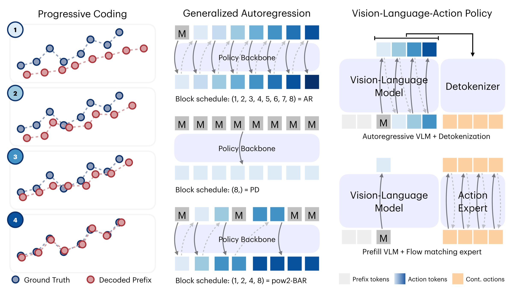
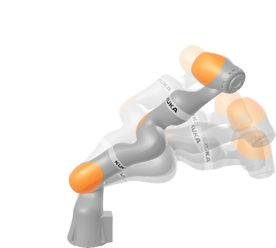
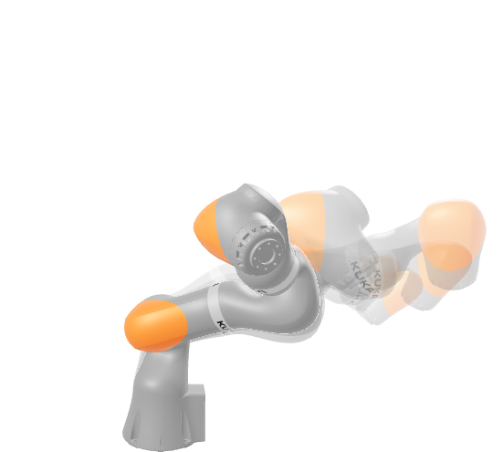
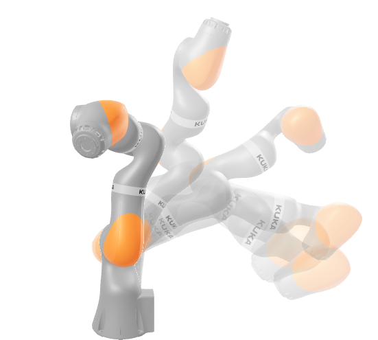
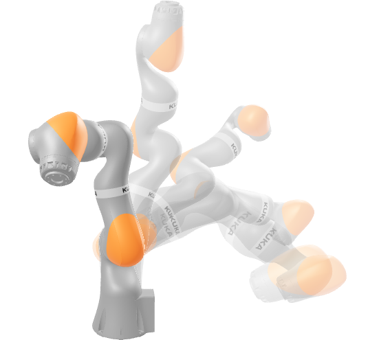
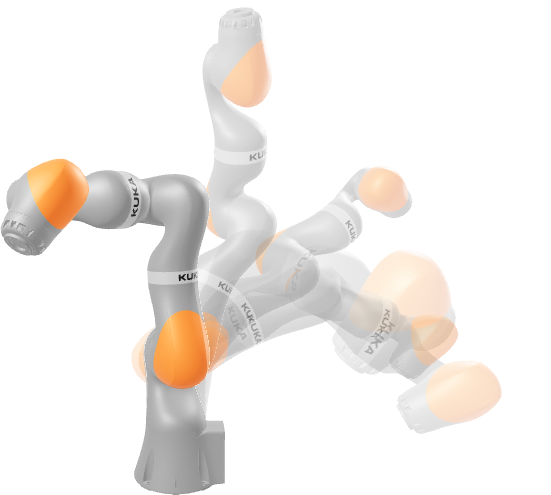
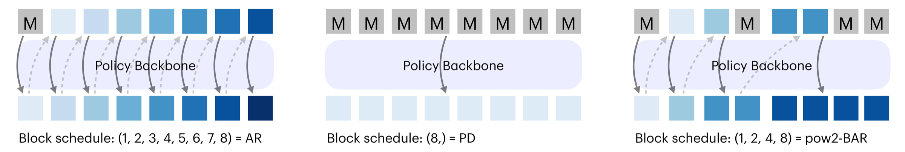
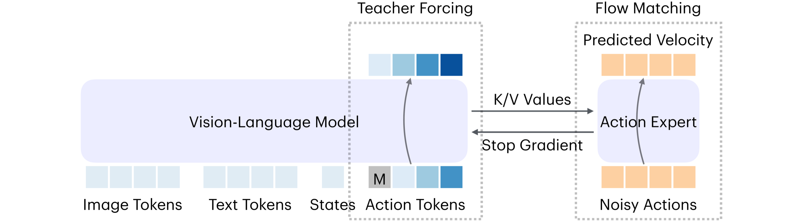

Ordered Action Tokens for Block-wise Autoregression and Knowledge-Insulated Policies
本文以 OAT 为基础，系统研究 action token 在 token-wise、block-wise 生成以及 VLM 监督中的作用。
1Harvard University · 2Stanford University

Action tokenization 不是简单预处理。
在进行 next-token 训练前，VLA 策略需要先把连续机器人动作转换为离散符号。这个转换决定了生成序列能否解码成有效动作、早期 token 是否携带有用控制信息，以及推理时是否必须为每个 token 额外调用一次 VLA。本文正是在这个视角下研究 action token。
- 问题：现有 action tokenizer 暴露出压缩性、全域可解码性、AR 可预测性与 block compatibility 之间的张力。即使是本文采用的基础有序 tokenizer OAT，当 VLA 必须逐个 token 顺序生成时也会变慢。在 knowledge-insulated VLA 训练中，action token 的作用同样缺少系统研究。
- 方法：我们将自回归 action-token 生成推广为 BAR：一种用 schedule 显式指定分块边界的生成方法。这个 schedule 覆盖 token-wise AR、block-wise AR 和 one-shot parallel decoding。从 OAT 出发，我们比较 token-wise OATsing 与 power-of-two OATpow2，再系统研究不同 action token 在 BAR 和 KI VLA 策略中的表现。
- 结果：有序前缀更容易被 VLA 策略建模；OATpow2 在 BAR 下揭示了 VLA 调用次数与性能之间的权衡；即使机器人最终由连续 expert 控制，OAT-style token 仍然是有用的 VLM 监督信号。
本文会反复用到的五个术语。
- 动作块
- 一小段未来连续机器人动作序列，记作 \(a_{1:H_a}\in\mathbb{R}^{H_a\times D_a}\)。
- Action token
- 由 next-token policy 生成，并被解码回控制信号的离散符号 \(T_i\in\mathcal{V}\)。
- 有序前缀
- 一个已经可以解码成完整粗粒度动作块的前缀 \(T_{1:k}\)。
- BAR
- 一种分块式自回归生成方法，按 schedule 逐步增长 action-token 前缀。
- KI
- 一种 VLA 训练设置：action token 用来监督 VLM，但最终控制由连续 expert 完成。
1. Tokenizer 决定了 VLA 要预测什么。
用 next-token prediction 训练的 VLA 并不直接建模连续控制。它建模的是 action tokenizer 产生的 token 序列，然后依赖 detokenizer 把生成的符号转回可执行动作。
因此，tokenization 是一个学习问题，而不只是压缩问题。一个 tokenizer 即使重建动作很好，也未必适合作为 VLA 的预测目标：序列可能太长，采样得到的 token 可能无法解码，或者从左到右的排列没有为策略提供有用的预测结构。
Token 序列应显著短于原始动作坐标，同时保留控制相关结构。
策略采样出的任意 token 序列都应能解码为有效的连续动作块，而不只限于 encoder 产生的序列。
前缀应当有意义，让 next-token prediction 变成结构化的 refinement 问题，而不是平坦的符号流预测。
当生成改为 block-wise 时，同一 schedule block 内的 token 必须能基于已有前缀联合预测。
各个 tokenizer 的取舍在哪里？
选择一个 action tokenizer，比较它在紧凑性、全域可解码性、AR 友好排序，以及 BAR 分块支持上的取舍。
策略含义 按 action step 分成的 block 是有效的，但序列长度仍会按 \(H_aD_a\) 增长，前缀也只是坐标片段。
2. Ordered Action Tokenization
OAT 是本文采用的基础有序 tokenizer。它学习一段紧凑的离散序列；序列前缀经过补齐和解码后，就能作为逐步细化的动作块执行。

Encoder 读取整个动作块，causal register attention 则为 latent slots 引入从左到右的依赖结构。
FSQ 将每个 register latent 转成 action token，得到一段紧凑、可由 next-token VLA 建模的序列。
Nested dropout 在 tokenizer 训练中 mask 掉 suffix tokens，迫使短前缀携带粗粒度控制信息，再由后续 token 补充 residual 细节。
完整的 tokenizer 机制请参见 什么是 OAT；这里我们只介绍理解 BAR 和 power-of-two OAT 所需的前缀机制。
前缀就是可执行的预算。
生成出的前缀可以经过 mask-padding 和 detokenization 变成完整动作块。更多 token 带来更细的动作 refinement；更少 token 则减少顺序 policy 调用。





它为 VLA 提供紧凑、可解码、有序且前缀有意义的 action token。
当策略每次只生成一个 token 时，长度为 \(K\) 的前缀仍需要 \(K\) 次顺序 VLA 调用。
3. BAR 将自回归生成按块调度。
OAT 让有序前缀可执行，但长度为 \(K\) 的前缀仍需要 \(K\) 次顺序 VLA 调用。BAR 通过在前缀边界上引入 schedule 来降低这种串行深度，并统一 token-wise AR、block-wise AR 和 parallel decoding。

选择 AR 的分块粒度。
对一段 16-token 的 action-token 序列来说，schedule 决定顺序 VLA 调用次数，以及每次调用需要联合预测的最大块。
进度条显示已经生成的前缀，以及当前阶段正在生成的 block。
每个阶段生成一个新 token。
上下文最充分，但串行深度也最大。
每个 token 都能看到所有更早 token 作为上下文，但推理仍然完全串行。
它决定每次 VLA 调用生成多少 token，也就决定了串行深度和预测难度之间的取舍。
Policy mask 可以在解码时把 token 分组，但真正有效的 BAR 需要这些 token block 在训练时就作为联合预测目标。
4. 如何 blockify OAT？
BAR 可以在推理时把 token 分组，但只有 tokenizer 在训练中也把这些同组 token 当作联合预测目标，这种分组才真正有用。为了 blockify OAT，OATsing 用 token-wise causal register mask 训练每个前缀，而 OATpow2 保留相同的 OAT encoder、FSQ bottleneck、prefix decoder 和 nested-dropout 目标，但用 block-causal register mask 训练 power-of-two 预算。
OATsing 和 OATpow2 训练不同的依赖模式。
BAR 会把后续 action-token positions 合并到同一个预测步骤里。关键问题是：新的 block 能否只依赖已实现前缀来联合预测，而不依赖同一 block 内部的串行依赖。
平坦因果链
行表示 query，列表示 key。
后续 registers 可以依赖所有更早的 registers。这适合 token-wise AR，但 post-hoc BAR 可能把一组已经在训练中学到块内串行依赖的 token 合并到同一个 block。
块因果 registers
2^n 块：[1] [2] [3-4] [5-8]
Registers 可以 attend 到更早 blocks 和自身，但不能 attend 到同一 block 内的其他 registers。每个 block 都被训练成基于已有前缀的联合预测目标。
只改 schedule 不会让 OAT 变成 block-compatible。
这个 LIBERO 诊断预示了后文的 BAR 结果。Token-wise OATsing 已经有有序前缀；post-hoc BAR 能减少调用次数，但会牺牲成功率。OATpow2 保留五次调用的 schedule，同时补上兼容性缺口。
它改变了生成 schedule，但 tokenizer 训练时仍在每个 schedule block 内保留串行依赖。
它保留 OAT 的前缀语义，同时让每个 schedule block 成为基于已有前缀的联合预测目标。
5. 首先确认前缀是真正的动作预算。
在训练 VLA policy 之前，我们先测量每个保留前缀是否真的增加了动作信息。短前缀应当已经能解码出粗粒度动作；后续 token 应该带来 refinement，而不是重复前缀已经携带的信息。
Nested dropout 训练的是整条前缀曲线 \(\varepsilon(K)\)，而不仅是端点 \(\varepsilon(H_l)\)。OATsing 在 token 粒度学习这条曲线；OATpow2 则在 block-wise 粒度上呈现同一条曲线，用边界 \(1,2,4,8,\ldots\) 作为逐步细化的预算。

6. VLA 能可靠生成这些前缀吗？
现在，VLA 必须自己生成这些前缀。在这个设置中，action token 就是部署时的动作表示：VLA 生成 token，tokenizer 将它们解码成连续动作块，而 BAR schedule 决定需要多少次顺序调用。
虚线 OATsing 和 OATpow2 曲线沿着有序前缀预算 \(1,2,4,8,16\) 前进。固定长度的 token baselines 则出现在各自序列长度的位置。
OATsing16 是 token-wise 参照。OATpow216 使用相同 horizon，但只需要五次 power-of-two BAR 调用。

7. 当 token 不直接控制机器人时，它们还能训练出更好的 VLM 吗？
到目前为止，action token 就是动作本身：VLA 生成它们，tokenizer 解码它们。KI 关注的是另一个问题：如果机器人由连续 expert 控制，action token 还能训练出更好的 VLM 上下文吗？
这沿用了现代 VLA 系统中越来越接近标准的设计模式，包括 π0.5 和 MolmoAct2：保护 VLM 上下文路径，并让连续 action expert 产生控制。Action token 在共训中监督 VLM，但部署时由独立的 flow-matching expert 执行动作。这就是 knowledge-insulated cotraining 设置。

动机很直接：flow-matching expert 是很强的连续控制器，但 expert-side loss 可能把噪声梯度注入 pretrained VLM backbone，破坏 backbone 原本有用的语义知识。KI 阻断这条路径。Token cross-entropy 让 VLM 适应与动作相关的上下文；flow matching 训练 action expert；stop-gradient 防止 expert loss 改写 VLM。
共训目标包含两条路径。
Action-token branch 为 VLM 提供 action-aware 的 cross-entropy 信号。与此同时，action expert 学习一个以图像、语言和机器人状态 prefill 产生的 layer-wise K/V values 为条件的连续 flow-matching controller。Flow loss 把这些 K/V values 当作常量，只更新模型的 expert side。
\(\operatorname{sg}(\cdot)\) 表示 stop-gradient。Token loss 更新 VLM 上下文路径；flow loss 使用 detached context K/V values 更新连续 action expert，而不是使用 teacher-forced action-token positions 产生的 K/V values。
推理时，token branch 被移除。
部署时，VLM 仅以图像、语言和机器人状态作为上下文进行一次 prefill。它的 logits 会被忽略，不再运行 action-token decoding loop；controller 只保留 detached K/V cache。随后，连续 action expert 从这个固定上下文中迭代去噪生成动作块。
8. 在 KI 中，action token 仍然重要。
KI 设置在部署中移除了 action-token decoding，但这并不意味着 tokenizer 无关。不同 action token 仍会训练出不同的 VLM 上下文表示，而这些差异会体现在闭环控制中。
部署的 controller 始终是连续的；图中各方案的区别在于由哪个 action tokenizer 提供 VLM cross-entropy targets。
如果 token 在 KI 中无关，这些柱子应该趋同。相反，不同 tokenizer 产生了明显不同的闭环结果。

附录
对受控 VLA 实验感兴趣的读者也可以继续看 Praxis：这是一个用于系统 VLA 研究的受控实验平台。 praxis-vla 提供训练平台； praxis-eval 提供评测套件。
@article{liu2026oatvla,
title={Ordered Action Tokens for Block-wise Autoregression and Knowledge-Insulated Policies},
author={Liu, Chaoqi and Zhao, Yue and Chen, Haonan and Han, Xiaoshen and Gao, Jiawei and Adeli, Ehsan and Du, Yilun},
year={2026},
url={https://ordered-action-tokenization.github.io/vla/}
}